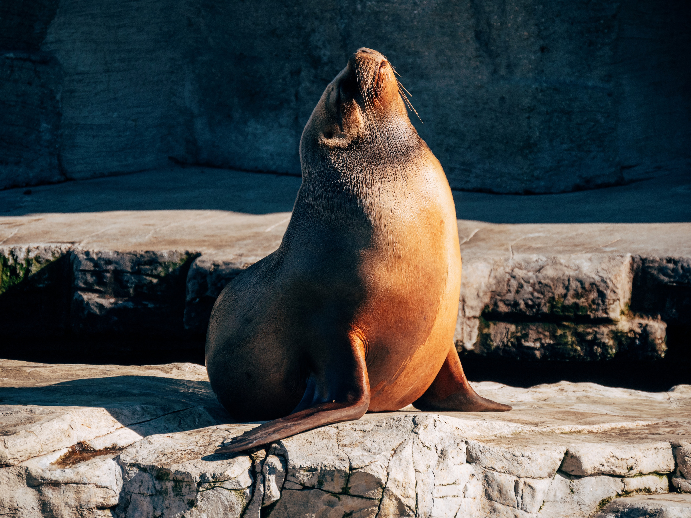

Get Ready to Seal-abrate!
Dive in and Discover the Charm of These Aquatic Wonders
Exploring the World of Seals
Hold onto your flippers, because we're about to embark on a journey into the lives of seals! These adorable aquatic mammals are real stars of the ocean, and they've got some seal-iously cool tales to tell. From Arctic cold to sunny shores, seals have mastered the art of enjoying life both above and below the waves. Let's splash into the deep waters of seal knowledge!
Estilo e Movimentos

As focas são conhecidas por suas habilidades de natação elegantes, muitas vezes rivalizando com as dos nadadores olímpicos de alto nível. Suas nadadeiras, semelhantes a atletas bem treinados, as guiam pela água com uma graça hipnotizante.
Um aspecto fascinante é seu isolamento natural: camadas de gordura. Este mecanismo de aquecimento embutido permite que elas prosperem em várias temperaturas da água. Imagine essas criaturas deslizando sob a superfície da água – uma dança perfeita com as correntes, seus corpos aerodinâmicos movendo-se com fluidez e elegância. É um testemunho da adaptabilidade da natureza e da beleza inspiradora da vida aquática.
Pontos de Encontro das Focas

Adivinha onde você pode encontrar essas criaturas fantásticas? Desde as zonas de mergulho polares geladas até os pontos costeiros ensolarados, as focas sabem como escolher seus lugares. Elas adoram descansar em costas rochosas, exibindo sua pele beijada pelo sol e, ocasionalmente, deslizando para a água.
Conheça a Equipe de Focas


Conheça os VIPs (Very Important Pinnipeds)! Temos a foca-comum, a foca-cinzenta, a foca-elefante (sim, aquela com o nariz engraçado) e a feroz foca-leopardo. É como um elenco estrelado do oceano! Cada uma tem suas próprias peculiaridades e habilidades, tornando-as as verdadeiras ícones do tapete vermelho subaquático.
Fatos Interessantes Sobre as Focas

Mergulhe no mundo das focas, essas encantadoras criaturas marinhas com um talento para o extraordinário. Desde prender a respiração como campeãs subaquáticas até usar seus bigodes como GPS subaquático, essas maravilhas marinhas são verdadeiros espetáculos.
As focas dominam a arte de prender a respiração, fazendo qualquer mergulhador profissional ficar verde de inveja. E aqueles bigodes? São como o próprio GPS da natureza, guiando esses exploradores subaquáticos em suas aventuras aquáticas.
Para um mergulho mais profundo na incrível vida das focas, visite sealworld.com